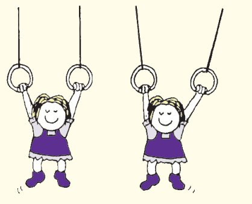
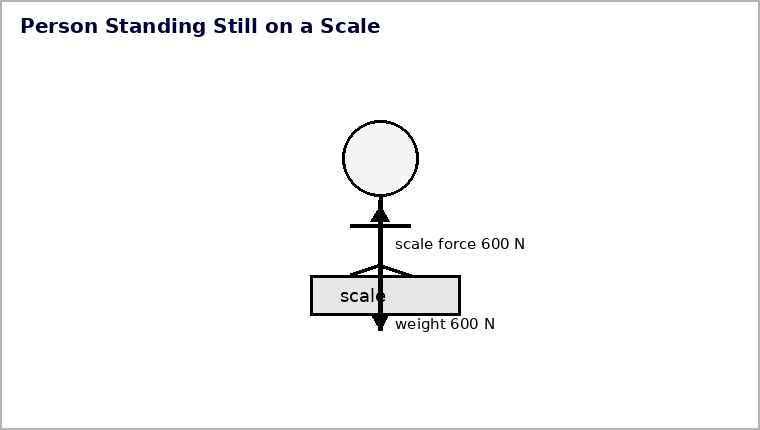

Equilibrium and Balanced Motion
Section 1.4
Equilibrium describes the net force, not whether individual forces disappear.
Learning Target
Students will determine whether an object is in mechanical equilibrium and explain how balanced forces relate to rest or constant straight-line motion.
- I can recognize static equilibrium and dynamic equilibrium.
- I can explain why an object at rest can still have forces acting on it.
- I can explain why an object moving at constant speed in a straight line can be in equilibrium and use the equilibrium rule to reason about upward/downward and left/right forces.
Vocabulary / Key Notation Preview
mechanical equilibrium · static equilibrium · dynamic equilibrium · balanced forces · constant velocity
Sort the vocabulary. Write each vocabulary word in the column that best matches what you know right now. You may move a word later.
| Know for sure | Recognize | Don't know yet |
|---|---|---|
What's to Come
Circle anything familiar, underline symbols, labels, conditions, data, or features that seem important, and write short notes about what you think may matter later.
The scaffold diagram shows upward support forces and downward forces on a system in equilibrium. Use the same scaffold for all parts.
(a) Identify the directions of the forces that must balance for vertical equilibrium.
(b) State the equilibrium relationship for the vertical forces.
(c) Suppose the total downward force is 900 N and the left support provides 350 N upward. Use part (b) to determine the right support force.
(d) Could the scaffold move horizontally at constant speed and still be in mechanical equilibrium? Justify using net force and motion.

Let's Get Started
Skim before close reading. Look at the headings and figures. Find 1–2 things you notice and 1–2 things you wonder about.
| What I noticed | |
|---|---|
| What I wonder |
Annotate the words and visuals together. Underline evidence, circle or highlight bold vocabulary, label arrows, measurements, or important features, connect sentences to figures, and jot short questions or connections in the margins.
I can recognize static equilibrium and dynamic equilibrium.
Equilibrium can be static or dynamic
Mechanical equilibrium means the net force on the chosen system is zero. Balanced forces are forces whose vector sum is zero. Static equilibrium is equilibrium at rest. Dynamic equilibrium is equilibrium while moving with constant velocity. In both cases the force condition is the same; the motion state is different.
Constant velocity means unchanged speed and unchanged direction. A cart moving steadily in a straight line can therefore be in equilibrium. An object moving around a curve is changing direction, so its velocity changes even if its speed happens to stay constant.
\(\Sigma \vec F=0\)
Physical meaning: The vector sum of all forces on the chosen system is zero. Along one axis, total positive-direction force equals total negative-direction force.
Example 1: Static or Dynamic Equilibrium
A cart rolls in a straight line at constant speed while all forces balance. What kind of equilibrium is this?
You Try It 1: Static or Dynamic Equilibrium
A person stands still on a scale with balanced vertical forces. Classify the equilibrium.
I can explain why an object at rest can still have forces acting on it.
Balanced does not mean force-free
An object at rest can have weight downward and one or more support or tension forces upward. Those interactions remain present. Rest tells us the velocity is not changing; in the equilibrium model, that means the forces balance rather than vanish.
When a supported load shifts position, the individual support forces may change. The total upward support still must balance the total downward force if the system remains in equilibrium.

Example 2: Forces at Rest
The person is standing still on the scale. Identify the upward and downward forces shown and explain why both can act while the person remains at rest.

You Try It 2: Forces at Rest
The scaffold is at rest. Use the upward support arrows and downward load arrows to explain how several forces can act while the scaffold remains in equilibrium.
- The opposing forces can balance so their vector sum is zero even though individual forces are present.
- An object at rest cannot have any forces acting.
- Inertia creates an upward force that removes all other forces.
- Only gravitational force matters when speed is zero.
I can explain why an object moving at constant speed in a straight line can be in equilibrium and use the equilibrium rule to reason about upward/downward and left/right forces.
Use balance to reason about unknown forces
The equilibrium rule is useful because it constrains the forces. If the total downward force is 1000 N, all upward supports together must total 1000 N. If one support supplies 170 N, the other support must supply the remaining 830 N. The same reasoning works left and right for a box moving at constant velocity.
A force diagram and a motion description are two representations of the same system. If the motion is constant velocity, the force diagram must have zero resultant. If the diagram has a nonzero resultant, then the motion must be changing. Checking whether the representations agree is a powerful error check.

- What does mechanical equilibrium tell you about net force?
- How can a system have the same net force of zero while being either at rest or moving?
- Use the scaffold figure: if one upward support becomes smaller while the load stays the same, what must happen to the other support?
Example 3: Apply the Equilibrium Rule
A suspended light is in vertical equilibrium. One cable pulls upward with 27 N and a second cable pulls upward with 45 N while the light’s weight is 72 N downward. Use \(\Sigma F_y\) to determine the net force.
You Try It 3: Apply the Equilibrium Rule
A suspended light is in vertical equilibrium. One cable pulls upward with 35 N and a second cable pulls upward with 60 N while the light’s weight is 95 N downward. Use \(\Sigma F_y\) to determine the net force.
Example 4: Find the Missing Balanced Force
Use the support-force diagram as an equilibrium model. The total downward force is 820 N and one upward support supplies 300 N. What upward force must the other support provide?

You Try It 4: Find the Missing Balanced Force
The box in the diagram moves at constant speed. If the applied push is 48 N to the right, what friction force must act to keep horizontal equilibrium?

- 48 N left
- 96 N left
- 0 N
- cannot be in equilibrium because it is moving
Vocabulary with Definitions / Reference
| Term | Physics meaning |
|---|---|
| mechanical equilibrium | A state in which the net force on the system is zero. |
| static equilibrium | Mechanical equilibrium while the object is at rest. |
| dynamic equilibrium | Mechanical equilibrium while the object moves with constant velocity. |
| balanced forces | Forces whose vector sum is zero. |
| constant velocity | Motion with unchanged speed and unchanged direction. |
Summary
- Mechanical equilibrium means the vector sum of forces is zero.
- Equilibrium can be static (at rest) or dynamic (constant velocity).
- The equilibrium rule can be used to reason about unknown upward/downward and left/right force components.
What I Figured Out
1. How are static and dynamic equilibrium alike and different?
2. Why can an object at rest still have forces acting?
3. How can the equilibrium rule determine an unknown force?
Common Mistakes
- Equating equilibrium with rest only.
- Assuming constant speed means equilibrium even when the direction is changing.
- Assuming individual forces disappear when the net force is zero.